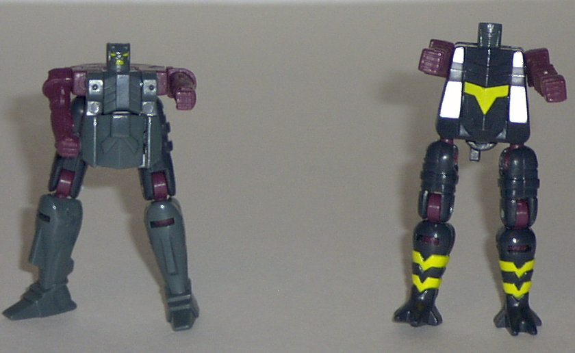
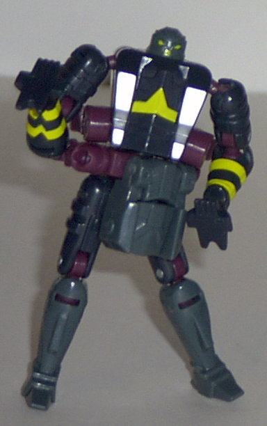
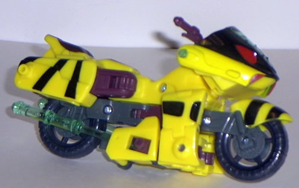
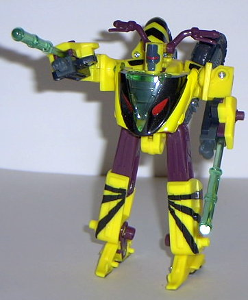
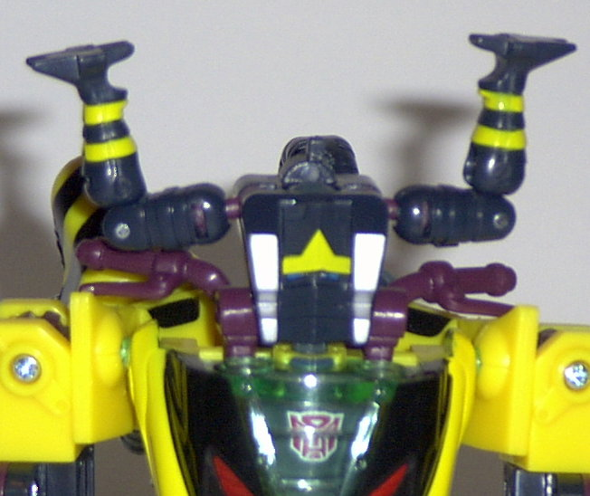
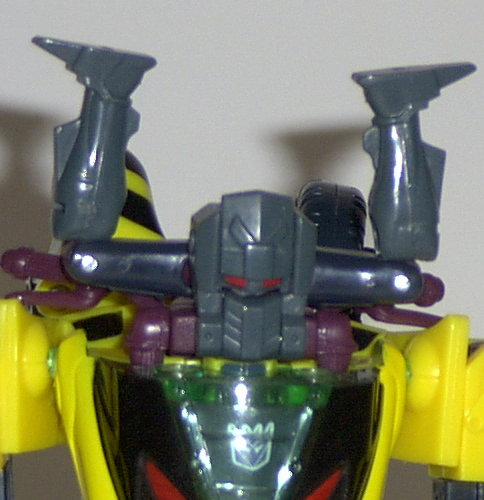

Rapid
Run w/ Nightcruz and Nightscream
Rapid
Run w/ Nightcruz and Nightscream
(NOTE: Because this set is a repaint, this
is not a full-blown review. This mainly covers any changes made to the
set and the color scheme, and merely compares it to Armada Sideways w/
Crosswise and Rook. For a review on the mold itself, read the review of
Armada Sideways w/ Crosswise and Rook
here
.)
 Nightcruz
& Nightscream
Nightcruz
& Nightscream


Allegiance
: Minicon
Size
: Mini-Con
Difficulty of Transformation
: Easy
Color Scheme (Nightcruz)
: Reddish
violet, dark smoky gray, and some bluish black, yellow, and red
Color Scheme (Nightscream)
: Reddish
violet, bluish black, and some dark smoky gray, yellow, silver, and blue
Rating (Nightcruz)
: 4.7
Rating (Nightscream)
: 4.6
Nightcruz and Nightscream
look much more similar to each other than their predecessors Crosswise
and Rook did, and as such, it's a bit harder to tell who's who. That small
complaint aside, though, I'm pretty fond of their color schemes. Nightcruz--
the one pictured above on the left-- has a pretty dark color scheme, consisting
mostly of dark gray and reddish violet. These two colors go together pretty
well, but it seems that Nightcruz got shafted in the paint apps department-
only his robot head and mask head eyes are painted. Nightcruz activates
the Decepticon insignia on Rapid Run's chest when he's connected to him.
Nightscream, again,
has a scheme similar to that of his brother's, but is a bit darker- he's
pretty much all bluish black and reddish violet. I really wish Hasbro would
stop with the bluish black- it doesn't look as good as real black on 95%
of the Transformers it's used on. Nightscream has quite a few paint apps
to make up for Nightcruz, though- some nice, yellow "bumblebee-like" stripes
on his legs and chest, as well as some silver paint apps on the sides of
his chest. Overall, he looks pretty nice, color-scheme-wise. Nightscream
activates the Autobot insignia on Rapid Run's chest when he's connected
to him.
No mold changes have
been made to Nightscream and Nightcruz- so yes, they can still combine
to form a rider for Rapid Run.
Rapid
Run


Allegiance
: Decepticon
Size
: Deluxe
Difficulty of Transformation
: Medium
Color Scheme
: Reddish violet, yellow,
dark smoky gray, black, transparent light blue-green, and some bluish black,
flat grayish black, and red
Powerlinx ports
: 4 (2 gimmicked)
Rating
: 7.6
Rapid Run has a homage
to a previous Transformers character, although I'm not sure if it was intentional
or not. With his yellow and black-striped scheme, Rapid Run highly resembles
Waspinator
in his coloration. Which is somewhat
appropriate, seeing as how Rapid Run looks a lot like
Beast
Machines Thrust
in his vehicle mode, and Waspinator was the real personality
behind that character. Anyways, I think the scheme is pretty cool in that
respect, but otherwise I think it's pretty inappropriate for a motorcycle.
It's just too loud- there's nor enough of the gray and black to offset
how bright the yellow is. And although yellow motorcycles aren't that uncommon,
they aren't ALL yellow, and not with this particular pattern of black stripes.
The colors themselves tend to go together; I just think they should have
been flip-flopped, with the gray being the major color while the yellow
being merely a secondary one. I do like how Hasbro tried to fit Rapid Run
in with the whole "Energon" theme of the line by making his transparent
parts the color of Decepticon Energon. Although I'm not sure why he's proclaimed
as a Decepticon on the box, when he has no more of a definite allegiance
than Sideways...
No mold changes have
been made to Rapid Run.


Nightcruz and Nightscream
are some pretty nice repaints, even if they're not as different from each
other as their predecessors and thus easily confused. Rapid Run, although
a nice Waspinator homage, has a color scheme that's a bit on the loud side,
whereas his predecessor Sideways didn't. Thus, although Rapid Run has his
good points, I'd have to recommend Sideways over him.
Strength: 5.0
Intelligence: 6.0
Speed: 7.0
Endurance: 5.0
Rank: 5.0
Courage: 8.0
Fireblast: 6.0
Skill: 8.0
Review by Beastbot
Back to Transformers:
Energon Index